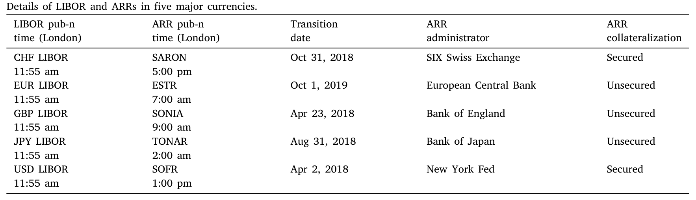
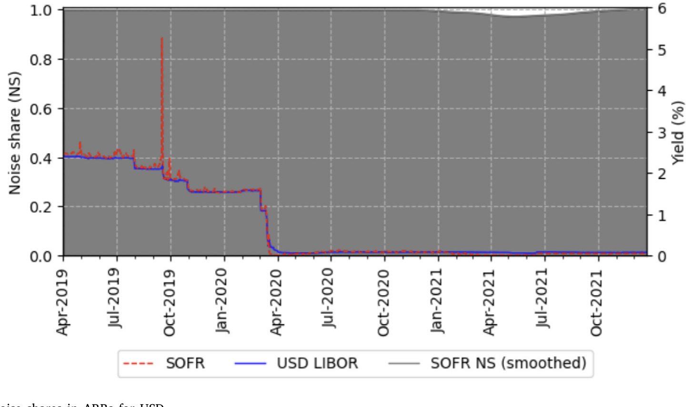
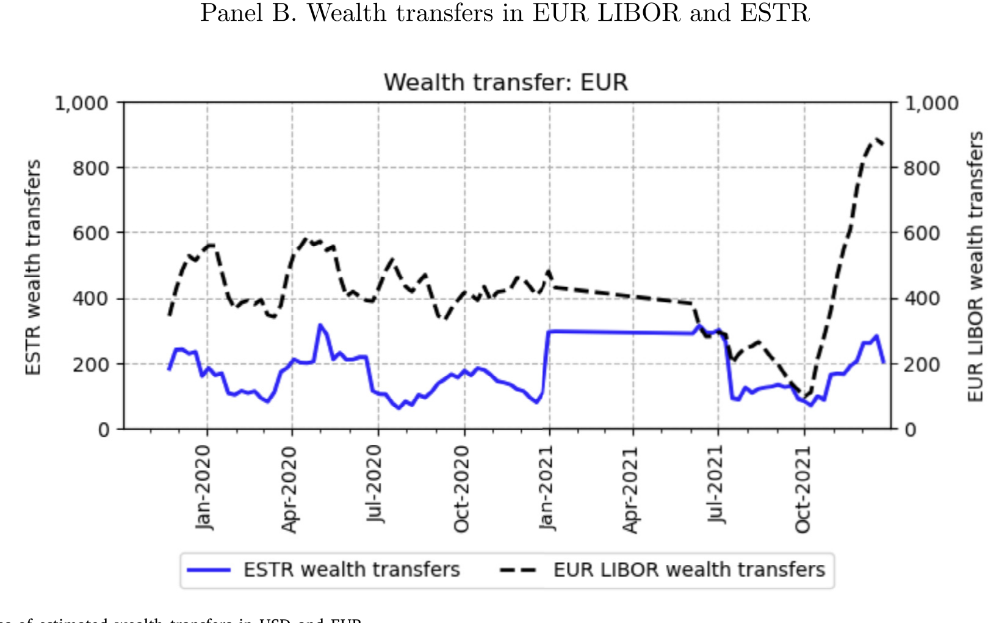
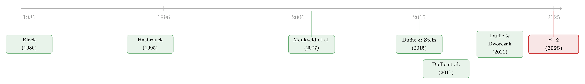

给基准做体检：LIBOR 退场之后，谁更「干净」？
本文读的是 Brugler, Khomyn & Putniņš (2025, Journal of Financial Economics)：他们用一个状态空间模型，把每一个利率基准的报价拆成「信息」与「噪声」两部分，再去丈量 LIBOR 和它的替代品 ARR 谁更干净。结论是——五种货币里有四种，转向以真实交易为基础的 ARR 之后基准变得更安静了；唯独美元的 SOFR 是个例外，它反而吵得多，每年因此被「错配」掉的财富以十亿美元计。
1 引言：一个被几百万亿美元压着的小数点
先说一个让人有点眩晕的数字。在美国，挂钩 LIBOR 的合约规模（截至 2020 年第四季度）超过 223 万亿美元，是同年美国 GDP（21 万亿美元）的十倍还多。换句话说，全世界有难以计数的利率互换、期货、远期、期权，以及普通人的房贷和企业的循环信贷，都把自己的现金流「钉」在一个每天早上 11:55（伦敦时间）由几家银行报出来的小数点上。
这就引出一个朴素到几乎被所有人忽略的问题：这个小数点，准吗？
费雪·布莱克（Fischer Black）在 1986 年那篇著名的《Noise》里留下一句被反复引用的话——「噪声让金融市场得以存在，但也让它变得不完美」。基准价格恰恰是这句话最赤裸的舞台。一个好的基准能提高整体福利、促进资源有效配置、降低市场参与者的成本（Duffie et al., 2017）；可一个被操纵、或干脆因为底层交易太稀薄而抖个不停的基准，会把风险定价搞乱，把财富在毫不知情的合约对手之间悄悄挪来挪去。
我们都知道 LIBOR 出过事。2012–2015 年的一连串操纵丑闻，加上 2008 金融危机后银行间无担保拆借市场的持续萎缩，最终促使各国央行、IOSCO 和国际清算银行联手，在 2021 年底之前把 LIBOR 送进历史，换上一批所谓的 替代参考利率（alternative reference rates, ARR）：瑞郎的 SARON、欧元的 ESTR、英镑的 SONIA、日元的 TONAR、美元的 SOFR。
故事到这里，叙事是顺理成章的：旧基准靠「问几家银行你今天大概借得到几个点」（submission-based），新基准靠「看真实成交了多少」（transaction-based）；后者更难操纵、底层更扎实，所以理应更好。但「更好」是一句口号，还是一个可以被测量的量？ 这正是这篇论文要钉死的地方。

Table 1
2 真正关键的一步：把价格拆成「信息」与「噪声」
要回答「基准好不好」，作者没有去做问卷，也没有去比谁离央行政策利率更近。他们做了一件更本质的事——把一个基准的报价，分解成两个互相正交的部分。
直觉是这样的。任何一个隔夜利率，背后都有一个我们看不见的、真实的「有效利率」（efficient rate）。它像一个无形的水位，随着市场对隔夜无风险资金成本的看法而真实地涨落。我们每天观测到的基准报价，则是这个真实水位，再叠加上一层临时的、会回归的扰动——可能来自流动性紧张、抵押品供求、报价方法的瑕疵。前者是信息，是值得被合约钉住的东西；后者是噪声，是纯粹的干扰。
这里的核心是一个识别上的假设：噪声与信息互不包含——噪声项里没有关于真实利率走向的任何信息，反之亦然。正是这个正交性，让卡尔曼滤波（Kalman filter）能把两者干净地分开。
作者借用的工具，是 Menkveld et al. (2007) 用来研究跨市场价格发现的那套 状态空间模型（state-space model）。一个货币里，LIBOR 和它对应的 ARR 在同一天、但不同时刻报价（比如欧元 ARR 是早上 7:00，欧元 LIBOR 是 11:55），它们其实是同一个真实利率在一天里被「顺序地」量了两次。
3 模型：一步步把噪声逼出来
我们先看那个看不见的真实利率。它遵循一个带时变波动率的随机游走（random walk）：
$$m_{t,\tau+1} = m_{t,\tau} + w_{t,\tau}, \qquad w_{t,\tau}\sim\big(0,\ \sigma^2_{w\tau}\big)$$
这里 \(t\) 是「天」，\(\tau\) 标记一天之内的不同报价时段。\(w_{t,\tau}\) 是真实利率的更新，它的方差 \(\sigma^2_{w\tau}\) 可以随时段不同而不同——这恰好对应「同一天里不同时刻报出的基准，承载的新信息可能不一样多」。
接着，每一个观测到的基准报价，是真实利率加上一个定价误差：
$$y_{t,\tau} = m_{t,\tau} + s_{t,\tau} = m_{t,\tau-1} + w_{t,\tau-1} + s_{t,\tau}, \qquad s_{t,\tau}\sim N\big(0,\ \sigma^2_{s\tau}\big)$$
把它展开成右边那一行，这篇论文最核心的一块积木就摆在眼前了——观测值 = 上一期真实水位 + 真实更新 + 噪声。我们用一张带标注的卡片把它讲透：
把它写成标准的状态空间形式（令 \(s=t,\tau\) 为统一的时间索引），状态方程与观测方程是：
$$m_{s+1} = m_s + w_s$$
$$\mathbf{y}_s = I_2\times m_s + \varepsilon_s$$
这里有个很巧的处理：观测向量 \(\mathbf{y}_s\) 有两个元素（LIBOR 与 ARR），但在任一时段只有一个被真正观测到，另一个按构造是缺失值。卡尔曼滤波天然能处理这种缺失——它正是「顺序报价」这个场景的天作之合，而不需要像向量自回归（VAR）那样硬把一天切成等长的子区间。论文进一步在观测方程里加了一个常数项 \(\boldsymbol\mu\)（吸收两个基准之间因信用/流动性差异造成的固定利差）和一组控制变量 \(\beta'\mathbf{x}_t\)（央行政策利率、国债收益、CDS 利差等）：
$$\mathbf{y}_s = \boldsymbol\mu + I_2\times m_s + \beta'\mathbf{x}_{t} + \varepsilon_s$$
估计出来的两个方差 \(\sigma^2_{w\tau}\)（信息）和 \(\sigma^2_{s\tau}\)（噪声），就是评判基准质量的全部原料。作者由此定义了三个量。信息份额（information share）衡量某个基准贡献了多少真实利率的变动：
$$IS_\tau = \frac{\sigma^2_{w\tau}}{\sum_{i=1}^{N}\sigma^2_{wi}}$$
噪声份额（noise share）则是某个基准的噪声，占同一货币里全部基准（LIBOR 与 ARR）噪声总和的比例——这是一个「币内归一化」，刻意把那些与报价方法无关的因素（比如各币种隔夜市场本身的差异）约掉，只留下方法论之间的相对噪声：
$$NS_\tau = \frac{\sigma^2_{s\tau}}{\sum_{i=1}^{N}\sigma^2_{si}}$$
最后还有一个信息噪声比（information-to-noise ratio）：
$$IN_\tau = \frac{\sigma^2_{w\tau}}{\sigma^2_{w\tau}+\sigma^2_{s\tau}}$$
在动用真实数据之前，作者先用蒙特卡洛模拟造了一批「真值已知」的基准序列，验证这套方法能把 \(IS\)、\(NS\)、\(IN\) 准确地还原出来。这一步看似程序化，却是整篇论文可信度的地基——如果模型连自己造的数据都还原不了，后面所有的「噪声」就都成了模型的噪声。
4 数据
样本是五种货币（CHF、EUR、GBP、JPY、USD）的隔夜（O/N）利率，之所以取隔夜，是因为它正好和五个 ARR 的期限对齐。LIBOR 与 ARR 的日度数据来自 Factset。主样本从各币种转换里程碑的两年前开始，到 2021 年 12 月 31 日 LIBOR 停止发布为止（美元因 SOFR、欧元因 ESTR 都是全新的 ARR，没有「转换前」数据，故只有转换后估计）。观测单位是「币种 × 报价时段」的日度利率，每个币种分别估计一套模型。
5 主要结果：四个安静的，和一个吵闹的
首先，是符合直觉的那一半。 在五种货币里的四种——瑞郎 SARON、欧元 ESTR、英镑 SONIA、日元 TONAR——ARR 的噪声份额都低于对应的 LIBOR。也就是说，从「问银行」转向「看成交」，确实让基准变安静了。这印证了 Duffie and Dworczak (2021) 在理论上对「以交易为基础的基准」的偏爱。
接着，一个自然的问题是：那美元呢？ 毕竟美元市场是这一切的中心。于是反转出现了。 美元的新基准 SOFR，不但没有比美元 LIBOR 更干净，反而吵得多。原因藏在它的设计里：和其他几个无担保的隔夜利率不同，SOFR 建立在以美国国债为抵押的有担保回购交易之上。这让它对抵押品的供求极其敏感——数据里有 SOFR 在单日内跳升超过一整个百分点、然后第二天又回落的例子。这种暴跳显然不是隔夜资金真实成本的变化，而是赤裸裸的噪声。

Figure 3: LIBORs, ARRs, and noise shares in ARRs for USD
这正是这篇论文最有意思的地方：它没有满足于「新的就是好的」这种叙事，而是用同一把尺子量出了一个反例。SOFR 之所以特殊，本质上是它把一个「无风险」的利率，建在了一个会因抵押品紧张而抽搐的市场上。（关于「无风险市场」里其实远不太平、做市商的风险约束如何反噬价格，可参见《无风险市场里的风险厌恶：是谁给做市商系上了「风险限额」这根绳》。）
然后，真正关键的一步在于：把噪声换算成钱。 噪声份额是个无量纲的比例，听上去很抽象。作者于是把每天估计出的噪声分量，乘上当天钉在该利率上的隔夜利率互换（overnight interest rate swap, OIS）的名义本金，得到「因噪声而在合约对手之间错配的财富」。结果相当惊人：如果 2020 年所有 OIS 都钉在 LIBOR 上，一年里会有约 770 亿美元仅仅因为基准噪声而易手；如果换成 ARR，大多数货币的数字会变小，但全局合计反而更大——约 1660 亿美元，原因正是 SOFR 那异常高的噪声。这些数字已经按多空头寸轧差（entity-netted notional）做了调整。换算成比例，用 ARR 时这部分年度财富转移约等于 OIS 未平仓名义本金的 0.38%。

Figure 4: The time series of estimated wealth transfers in USD and EUR
最后，论文给出了一个让政策制定者能直接拿走的结论：好的改革确实能压住噪声。 最干净的例子是英镑 SONIA——在 2018 年 4 月 23 日的 SONIA 改革之后，它的噪声份额从 54.7% 一路降到 11.7%。这次改革做了两件事：扩大参考市场（让基准建立在更大的成交量之上）、并引入了截尾均值（trimmed mean，剔除极端报价）。当然，作者也诚实地提醒，许多设计选择都是权衡：参考市场扩大能带来流动性，但若同时引入了异质性过强的交易，反而可能添乱。
值得一提的是，ARR 的「更安静」也不是免费的午餐。LIBOR 里本来含有银行信用风险成分，市场承压、银行信用恶化时 LIBOR 会上行，帮银行把融资风险转嫁给借款人（Kirti, 2022）；而「无风险」的 SOFR 在市场承压时反而下行，会诱使借款人恰恰在银行融资成本飙升时去支取授信额度（Duffie et al., 2022）。从政策角度看，这些代价要和本文量化出来的定价效率收益、以及防操纵的初衷，放在同一架天平上称。
6 文献脉络
这条线的源头，是布莱克 1986 年那句关于「噪声」的断言——金融市场离不开噪声，却也因噪声而不完美。把这句哲学命题变成可估计的计量框架，靠的是市场微观结构这一支：Hasbrouck (1995) 的信息份额（information shares）给了「价格发现贡献」一个量化定义；而 Menkveld et al. (2007) 把状态空间模型用到跨市场、跨时段的价格发现上，正是本文方法论的直接祖先。

另一条线来自基准设计本身的理论与政策讨论。Duffie and Stein (2015) 指出 LIBOR 操纵丑闻凸显了改革的必要；Duffie et al. (2017) 与 Duffie and Dworczak (2021) 进一步搭起「稳健基准设计」「最优基准设计」的理论骨架，主张用基于交易的基准替代基于报价的 LIBOR。实证那一侧，Schrimpf and Sushko (2019) 给了新基准一篇导论，Klingler and Syrstad (2021) 讨论 LIBOR 替代品是否更好，Indriawan et al. (2021) 发现 SOFR 比 LIBOR 更贴近美联储政策目标，Fassas (2021) 则用 Hasbrouck (1995) 的信息份额研究美国货币市场的价格发现。还有一支关心如何从隔夜 ARR 构造出向前看的期限利率（Bai et al., 2022；Heitfield and Park, 2019；Skov and Skovmand, 2021）。
本文的位置，是把这两条线合流：它既不是纯理论的「最优基准应该长什么样」，也不只是「新基准是否更贴近政策利率」，而是第一次把所有主要货币的 LIBOR 与 ARR 的信息/噪声含量逐一量出来，并据此估计噪声造成的财富转移。
7 评论与延伸（Q&A + 研究方向）
(a) 几个可能的疑问
Q：「噪声份额」和我们熟悉的「波动率」是一回事吗？
不是。波动率把真实利率的变动和临时扰动混在一起，而噪声份额只抓后者——它是定价误差方差 \(\sigma^2_{s\tau}\) 在币内的归一化。一个基准可以波动很大却几乎没有噪声（因为底层真实利率本就在剧烈变化），也可以水位很稳却噪声很高（报价方法在抖）。这正是状态空间分解的价值所在。
Q：把 LIBOR 和 ARR 放进同一个状态空间、假设它们共享一个「真实利率」，这合理吗？毕竟 SOFR 是有担保的、含义不同。
这是识别上最值得追问的一点。作者的处理是：用常数项 \(\boldsymbol\mu\) 吸收两者之间因信用/流动性差异造成的固定利差，再用控制变量吸收时变的信用与流动性效应。所以模型并非假设两者数值相等，而是假设它们围绕同一个隔夜真实水位上下波动。但若 SOFR 与无担保利率之间的利差本身是随机、时变且持续的，这种「固定利差 + 控制变量」的设定就可能把一部分真实的结构差异错记成噪声——这也是 SOFR 噪声偏高需要谨慎解读的原因之一。
Q：那么 SOFR「更吵」，会不会只是模型把抵押品市场的真实信息误判成了噪声？
有这个风险，但数据里单日跳升一个百分点又迅速回落的形态，更像临时的供求挤压而非持久的信息——它满足噪声「会回归」的特征。不过作者也明确承认，SOFR 的高噪声有相当部分来自其有担保设计，这究竟该算「方法缺陷」还是「真实反映了回购市场状况」，本身就有解读空间。
Q：770 亿 vs. 1660 亿这种财富转移数字，是「净损失」吗？
不是社会净损失，而是转移——一方的损失是另一方的所得，零和。它衡量的是噪声把财富在合约对手之间随机挪动的规模，反映分配上的不公与定价的不精确，而非烧掉的总福利。但分配本身有代价：它干扰风险定价、削弱风险有效配置的能力。
Q：本文研究的是隔夜利率，可现实中大量合约用的是期限利率（term rate），结论还适用吗？
适用。作者指出，任何基于 ARR 构造的期限利率，其计算都要用到隔夜利率，因此隔夜利率里的噪声会传导进期限利率。换句话说，对隔夜 ARR 噪声的判断，可以外推到期限 ARR。
Q：为什么英镑 SONIA 的改革效果这么干净，能从 54.7% 砍到 11.7%？
因为它同时动了两个最直接的杠杆：扩大参考市场（成交量上去了，单笔异常报价的权重就下来了）和截尾均值（直接砍掉极端值）。这恰好对应噪声的两个来源——样本太薄、和尾部太肥。这也是全文给基准设计者最实用的一条经验。
(b) 几个可能的研究问题与提案
1. 把这套「信息/噪声分解」搬到公司债基准上。
【经济故事】公司债没有一个像 LIBOR 那样的中心化日度基准，但评估服务商（如 ICE、Bloomberg）每天给海量债券打「评估价」（evaluated price），它们被广泛用于基金估值与抵押品计算。这些评估价里有多少是信息、多少是噪声？噪声又会通过基金 NAV 造成多大的隐性财富转移？ 【可行性】中。隔夜回购与利率市场的高频数据相对干净，公司债则交易稀疏、报价非连续，状态空间里「缺失观测」会多得多，识别更吃力。需要 TRACE 成交 + 多家评估价的面板，识别上可借鉴本文的多源序列设定。
2. 外资持有人结构与基准噪声。
【经济故事】当一个市场的边际定价者越来越多是跨时区的外资，隔夜基准在「本地白天」与「海外白天」两个时段的噪声可能系统性不同。把本文的「分时段方差 \(\sigma^2_{w\tau}\)」按持有人结构切开，也许能识别出「谁在场」如何改变价格发现。 【可行性】中偏低。需要把基准报价时段与跨境持仓/资金流数据对齐，后者频率低、归属难，识别外资份额的外生变动是关键难点。
3. 抵押品供求冲击如何注入 SOFR 噪声。
【经济故事】既然 SOFR 的高噪声源于有担保回购，那么国债供给冲击（如季末、拍卖结算日、债务上限事件）应当能在 SOFR 噪声份额上留下可识别的脉冲。这把「基准噪声」和「国债市场流动性」直接连了起来。 【可行性】高。回购量、国债拍卖日历、季末时点都是公开高频数据，可用事件研究或带日历哑变量的设定，把噪声份额的跳升归因到具体的抵押品事件。（与《一张资产负债表，两个市场：当国债拍卖悄悄挤掉了 MBS 的做市能力》的思路天然衔接。）
4. 截尾均值的「最优截尾比例」。
【经济故事】SONIA 改革告诉我们截尾能压噪声，但截多了会丢信息。存在一个让 \(IN_\tau\)（信息噪声比）最大的最优截尾比例吗？它该随底层市场的成交厚度而变吗？ 【可行性】高。可在本文的状态空间框架上做反事实模拟：对原始报价施加不同截尾规则，重估 \(\sigma^2_w\) 与 \(\sigma^2_s\)，画出「截尾比例—信息噪声比」曲线。数据与方法都现成。
8 参考文献
- Black, F. (1986). Noise. The Journal of Finance 41(3), 529–543.
- Duffie, D., & Stein, J. C. (2015). Reforming LIBOR and other financial market benchmarks. Journal of Economic Perspectives 29(2), 191–212.
- Duffie, D., Dworczak, P., & Zhu, H. (2017). Benchmarks in search markets. The Journal of Finance 72(5), 1983–2044.
- Duffie, D., & Dworczak, P. (2021). Robust benchmark design. Journal of Financial Economics 142(2), 775–802.
- Fassas, A. P. (2021). Price discovery in US money market benchmarks. Journal of Financial Markets (forthcoming).
- Hasbrouck, J. (1995). One security, many markets: Determining the contributions to price discovery. The Journal of Finance 50(4), 1175–1199.
- Indriawan, I., Liu, Q., & Tse, Y. (2021). Market quality and the connectedness of the SOFR and federal funds markets. Working paper.
- Kirti, D. (2022). What are reference rates for? Journal of Banking & Finance 144, 106635.
- Klingler, S., & Syrstad, O. (2021). Life after LIBOR. Journal of Financial Economics 141(2), 783–801.
- Menkveld, A. J., Koopman, S. J., & Lucas, A. (2007). Modeling around-the-clock price discovery for cross-listed stocks using state space methods. Journal of Business & Economic Statistics 25(2), 213–225.
- Schrimpf, A., & Sushko, V. (2019). Beyond LIBOR: a primer on the new benchmark rates. BIS Quarterly Review (March).
- Durbin, J., & Koopman, S. J. (2012). Time Series Analysis by State Space Methods. Oxford University Press.
我的判断：这篇论文最大的贡献，是把一句几乎成为陈词滥调的政策叙事——「以交易为基础的新基准更好」——拽回到一把可测量、可比较的尺子前，并诚实地报告了它给出的反例。SOFR 的故事尤其可贵：它提醒我们「无风险」并不等于「无噪声」，基准的质量不在于它名义上锚定了什么，而在于它脚下的那个市场是否足够深、足够稳。把噪声份额翻译成数百亿美元的财富转移，则让一个微观结构的概念第一次有了政策上的分量。
要说担忧，仍在识别。整套结论都压在「噪声与信息正交、且 LIBOR 与 ARR 共享一个真实利率」这个假设上；一旦 SOFR 与无担保利率之间的利差是持续而时变的，模型就有把真实的结构差异记成噪声的风险——SOFR 噪声偏高这个最醒目的结果，恰恰最该被这一担忧拷问。后续我最想看到的，是把这套分解放进国债供给冲击、季末时点这类外生事件里做事件研究：如果 SOFR 的噪声份额能被具体的抵押品事件干净地解释，那「噪声」二字才算真正落了地，而不是模型设定的残差。